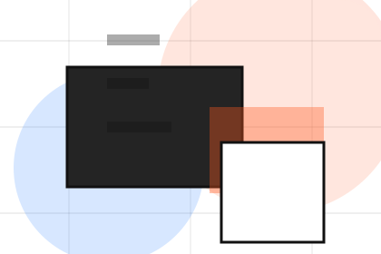
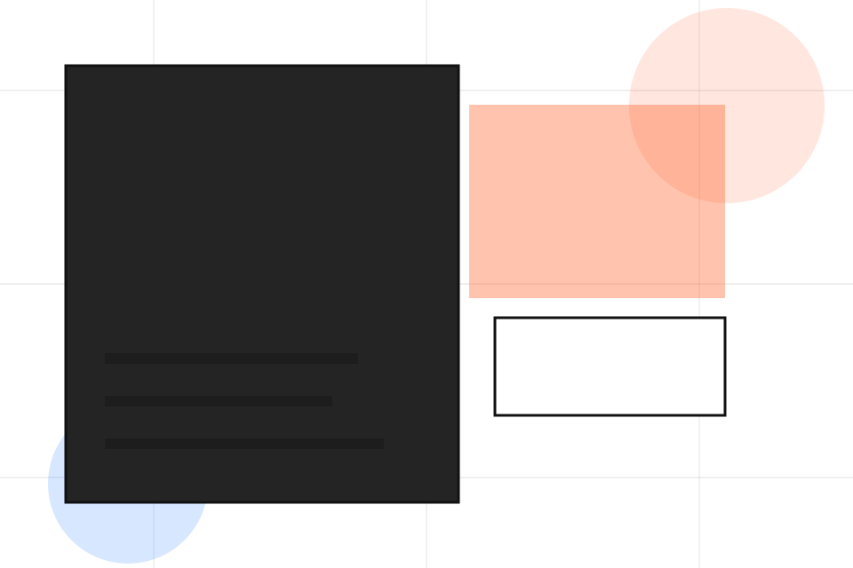
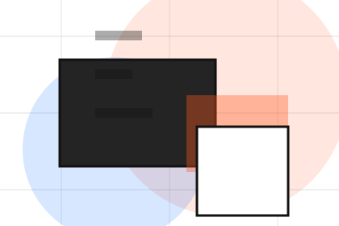
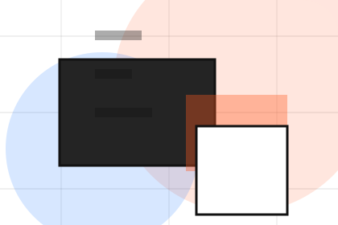
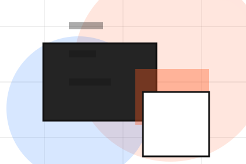
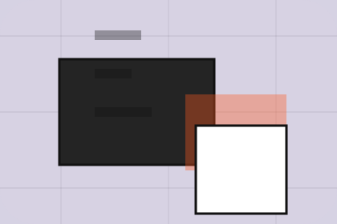

Context
Values gives the page a specific angle instead of repeating the navigation label.
Firm / 01
Firm opens as a clear consulting decision hub: what Vector offers, who it helps, why it matters, and which route to take first.
The first screen combines positioning, proof, primary action, and fast internal navigation, so people can act immediately or compare the rest of the firm route with context.
Idea-led editorial hero
Select the closest route and Vector keeps the next step, proof, and follow-up expectation aligned with clarity, leverage and measurable progress.

Firm / 02
Expertise adds professional context to the firm route, using the editorial innovation studio structure to support clarity, leverage and measurable progress before visitors choose a next step.
Vector uses case thinking cards and focused copy to make the decision easier to scan, aligning the section with clarity, leverage and measurable progress rather than filling space.
Explore FirmExpertise gives the page a specific angle instead of repeating the navigation label.
The case thinking cards show what to compare, what to avoid, and what matters most for consulting, strategy & business advisory visitors.
The final cue points to a useful internal route so the section keeps the journey moving.
Firm / 03
Method adds professional context to the firm route, using the editorial innovation studio structure to support clarity, leverage and measurable progress before visitors choose a next step.
Vector uses case thinking cards and focused copy to make the decision easier to scan, aligning the section with clarity, leverage and measurable progress rather than filling space.
Explore FirmVector structures method around context, judgment, and a clear next route so visitors can compare the block quickly before they send a brief.
Send BriefFirm / 05
Team introduces the people, roles, or specialist credibility behind Vector so the decision feels less anonymous.
The copy ties names, roles, credentials, or availability back to the decision on the page instead of treating profiles as decorative biographies.
Explore FirmThe person, team, or specialist function connected to team is easy to understand.
Credentials, responsibilities, or availability are tied to the visitor's decision, not listed for decoration.

The section explains how to move from profile interest to a practical conversation or booking path.
Firm / 06
Fit adds professional context to the firm route, using the editorial innovation studio structure to support clarity, leverage and measurable progress before visitors choose a next step.
Vector uses case thinking cards and focused copy to make the decision easier to scan, aligning the section with clarity, leverage and measurable progress rather than filling space.
Explore FirmFit gives the page a specific angle instead of repeating the navigation label.
The case thinking cards show what to compare, what to avoid, and what matters most for consulting, strategy & business advisory visitors.
The final cue points to a useful internal route so the section keeps the journey moving.
Firm / 07
Standards gives the proof layer for firm: standards, evidence, and reassurance that make the next decision feel grounded.
Instead of relying on vague claims, Vector presents visible standards, process cues, and proof artifacts that help consulting visitors judge fit.
Explore FirmVisible proof that helps visitors believe the claims behind standards.
The quality, safety, or operating expectation this section makes explicit.
What becomes clearer before someone decides whether to send a brief.
Firm / 08
Experience adds professional context to the firm route, using the editorial innovation studio structure to support clarity, leverage and measurable progress before visitors choose a next step.
Vector uses case thinking cards and focused copy to make the decision easier to scan, aligning the section with clarity, leverage and measurable progress rather than filling space.
Explore FirmVector structures experience around context, judgment, and a clear next route so visitors can compare the block quickly before they send a brief.
Send BriefFirm / 09
Trust gives the proof layer for firm: standards, evidence, and reassurance that make the next decision feel grounded.
Instead of relying on vague claims, Vector presents visible standards, process cues, and proof artifacts that help consulting visitors judge fit.
Explore Firm

Visible proof that helps visitors believe the claims behind trust.
Firm / 10
Vector closes the firm route with a clear action, a quick reminder of the value, and a low-friction way to send a brief.
Visitors who are ready can use the primary action. Visitors who are still comparing can scan the section links, proof, and support routes before they send a brief.
Send BriefThe final block keeps the choice simple: act now, compare one more proof route, or send enough detail for a focused response.
Send Briefclarity, leverage and measurable progress
A strategy studio site with large editorial type, idea-led modules, mosaic proof, and workshop conversion. Firm ends with a direct path to send a brief, plus enough context for visitors who still need to compare.

Send BriefInformation is provided for planning and should be reviewed for the final client, location, and operating rules.